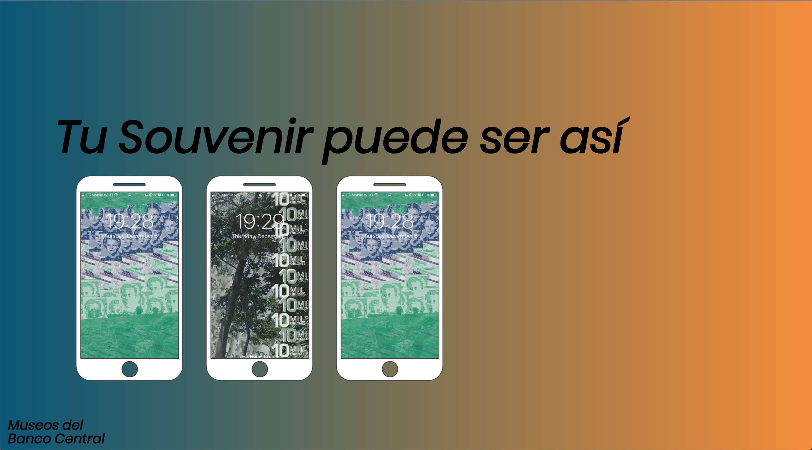
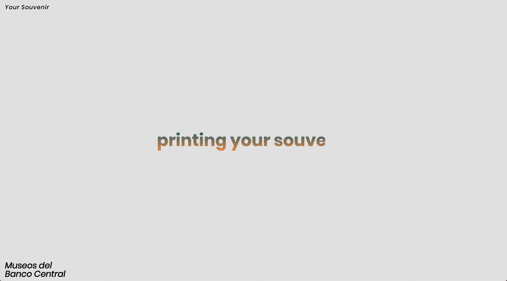
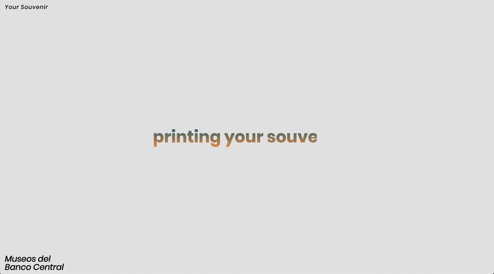
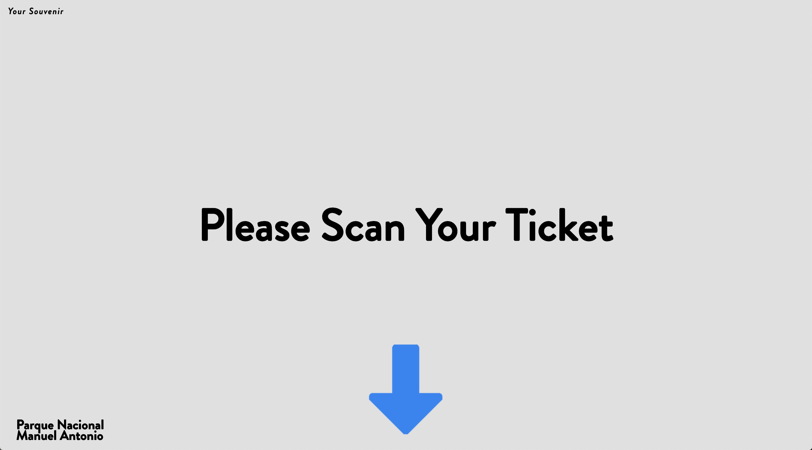
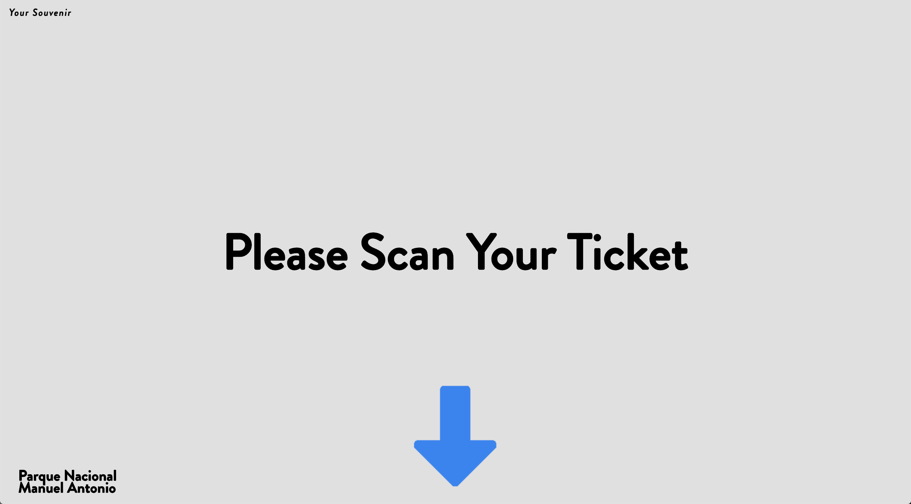
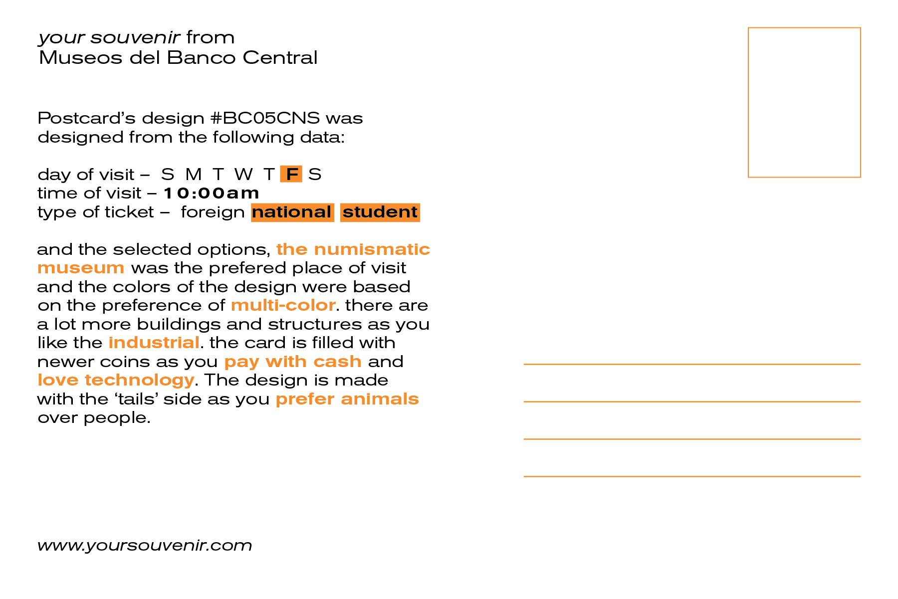
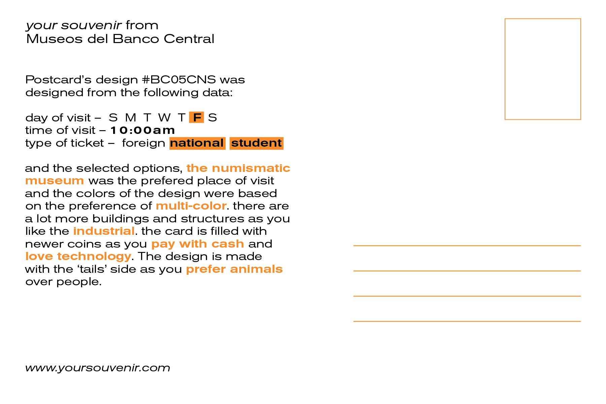

This project was created for ‘Thesis 1’ course in 2019. This class focused in the exploration and ideation of possible thesis concepts. “your souvenir” is an interface + tool that allows users to create a physical memory of their trip and or experience in a cultural institution or tourist attraction. For the first explorations of “your souvenir” are Museos del Banco Central and National Park Manuel Antonio. These locations are hotspots for both domestic and international tourists in Costa Rica.
 


 

The interface allows visitors to create custom postcards or screensavers based on their experiences in either site. Each output is created with the user’s response to a quick quiz and data based on their visit (eg. day and time, type of ticket). Their response will manipulate the way the graphic elements (images, illustrations, colour palette) would be arranged and placed in the outputs.
 
